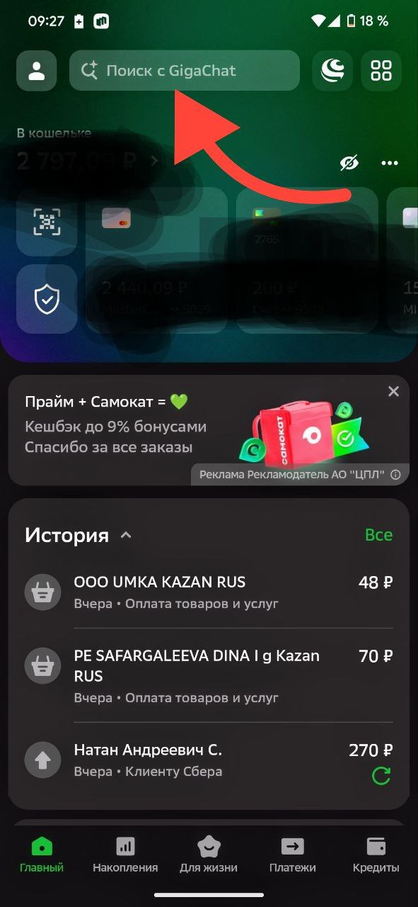
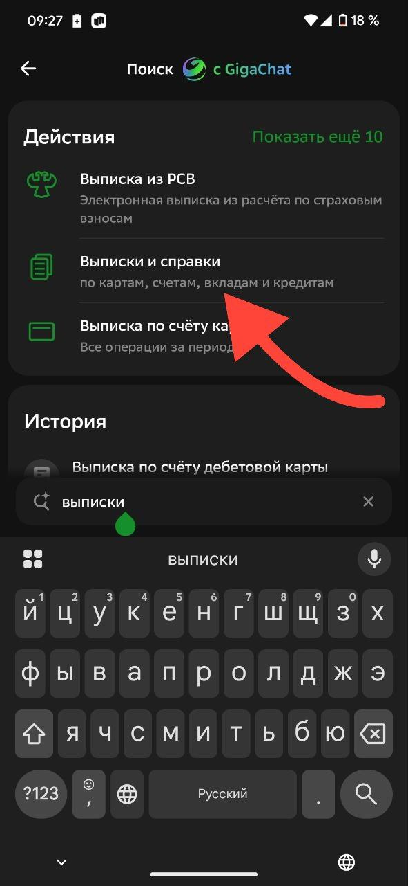
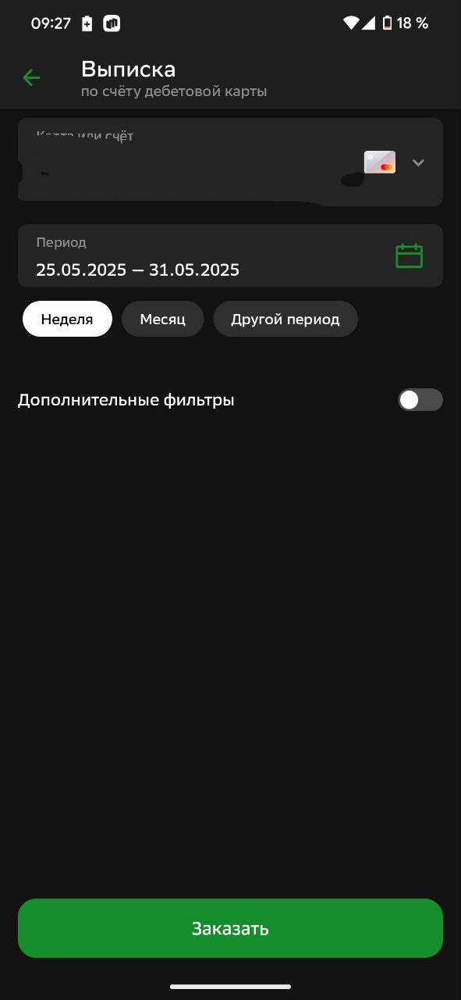

Сбер
1. Перейти в приложение сбер. После загрузки главного экрана нажать на поиск по направлению стрелки

2. Набрать на экране клавиатуры текст "выписки" и выбрать пункт выписки и справки

3. На новом экране выбрать выписка по счету карты
4. Выбрать период, нажать кнопку заказать. Сохранить и загрузить на сайт
